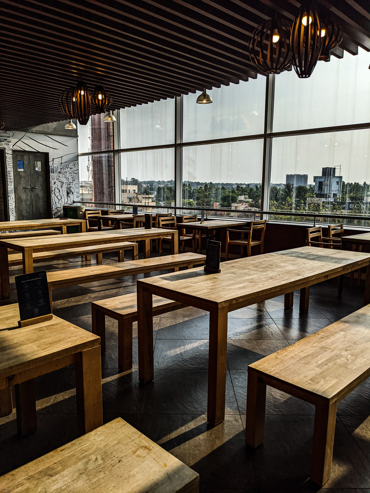

MUMBAI
Su ritmo trepidante, su bello caos, su infinita variedad de culturas, formas y colores. Si de la India se dice que es “país de países” Mumbai es una auténtica ciudad de ciudades. Una metrópoli plural y singular, a la vez capital financiera y cultural del subcontinente.

Ciudad de México, CDMX
Centro, Cuauhtémoc, 0600
Teléfono: +52 55 5521 3080
Guanajato
Sinaloa 141, Roma Nte,06700
Teléfono: +52 55 9130 7786

Maridamos nuestra cocina con otras muchas disciplinas que nos apasionan: desde la música a las artes visuales, la fotografía o el diseño, conviertiendo nuestros restaurantes de comida india en escaparates del talento emergente que habita en Barcelona y Madrid. No hacemos cocina de fusión: hacemos fusión con la cocina.